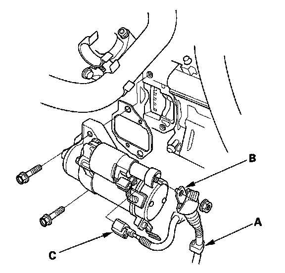
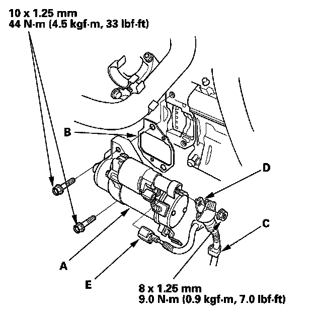

Removal and Replacement
Starter Removal and InstallationRemoval
1. Make sure you have the anti-theft codes for the audio system and navigation system (if equipped). Make sure the ignition switch is OFF.
2. Disconnect the negative cable from the battery first, then disconnect the positive cable.
3. Remove the air cleaner assembly
4. Remove the battery and battery base

5. Remove the harness clamp (A).
6. Disconnect the positive starter cable (B) from the B terminal, then disconnect the connector (C) from the S terminal.
7. Remove the two bolts holding the starter.
Installation

1. Install the starter (A) using a new gasket (B), then install the harness clamp (C), and positive starter cable (D) and S terminal connector (E). Make sure the crimped side of the B terminal is facing out, away from the starter.
2. Install the battery base and battery.
3. Install the air cleaner assembly.
4. Connect the positive cable to the battery first, then connect the negative cable.
5. Start the engine to make sure the starter works properly.
6. Do the steering column position memorization.
7. Enter the anti-theft codes for the audio system and navigation system (if equipped).
8. Set the clock.